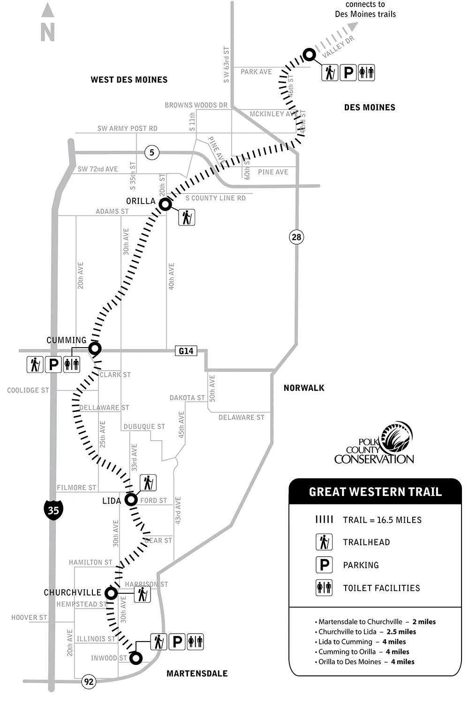
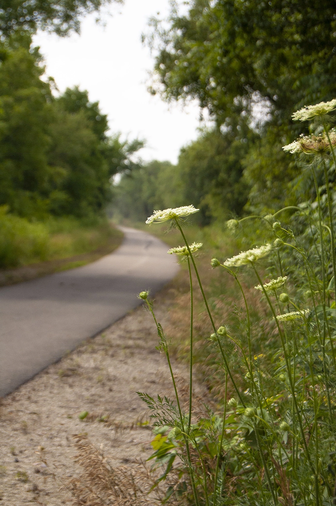
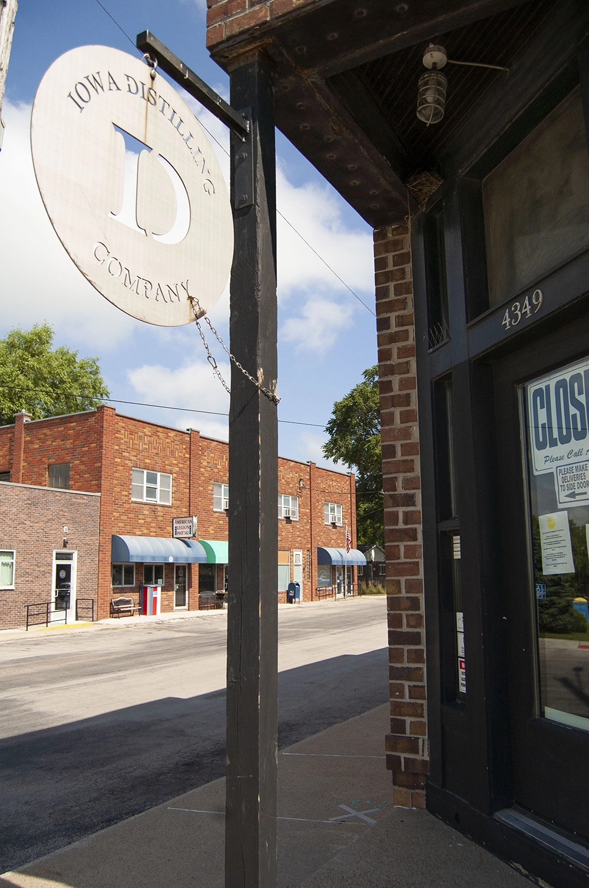
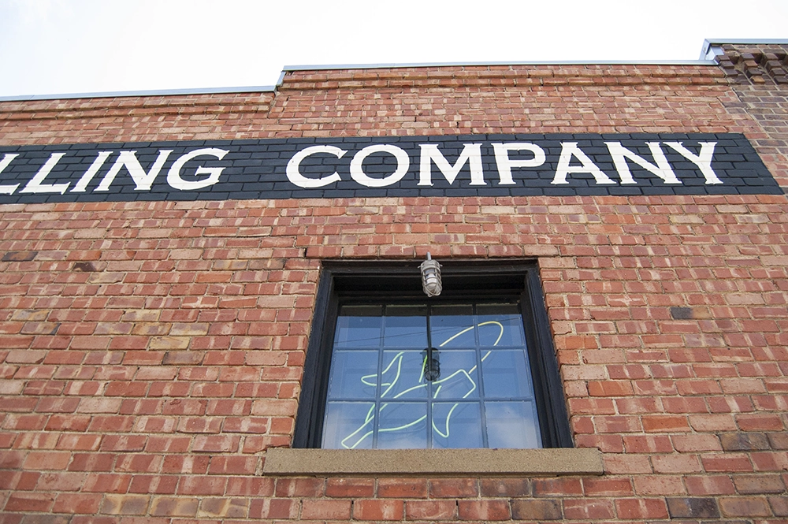
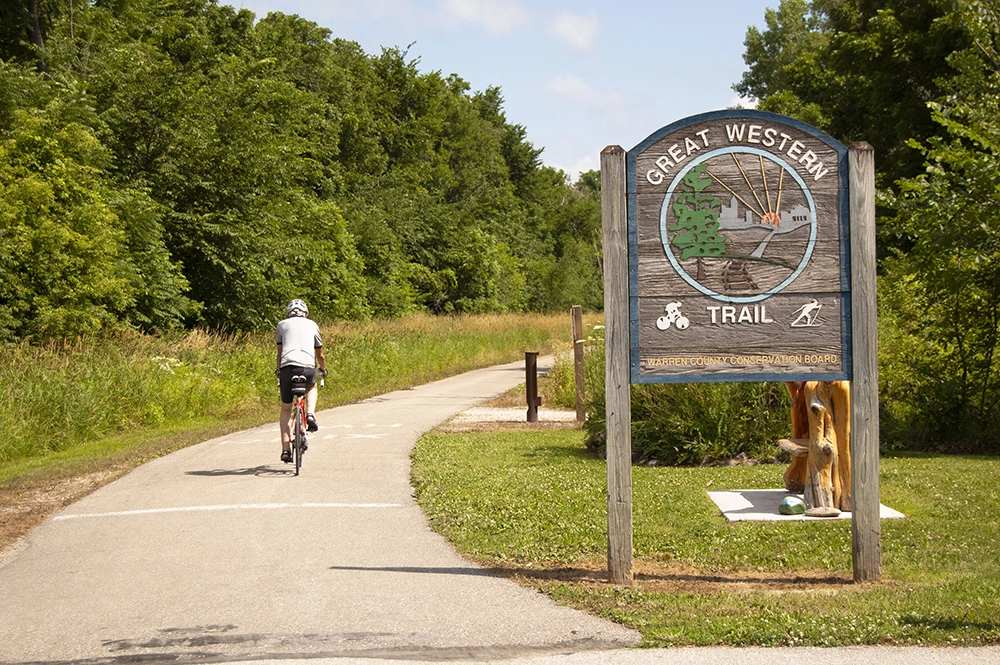

Visit · Outdoors
Great Western Trail
A paved trail on the old Chicago Great Western rail line, running right through the center of Middlebrook.
The trail
Ride, run, or walk from Middlebrook all the way into Des Moines.
The Great Western Trail runs through the center of Middlebrook, so every home is close to it. Head north and you reach Des Moines’ Water Works Park in about eight miles, where the trail connects to the metro’s larger recreational trail system. Head south and the trail rolls on through farmland toward Martensdale.
- 8
- miles north to Water Works Park in Des Moines
- 8.5
- miles south to the Martensdale trailhead
- 16.5
- miles from Des Moines to Martensdale

From rail line to trail
Following the old tracks
1892 to 1968
Trains on the Chicago Great Western line ran between Des Moines and St. Joseph, Missouri, right through the town of Cumming.
1992
With the tracks gone, the rail corridor became the Great Western Trail, connecting the Bill Riley Trail in Des Moines south to Martensdale.
Along the way
Prairie and wetland remnants line the trail, preserving native Iowa plants, with tree canopies shading long stretches of the path.
Through Cumming and Middlebrook
The trail runs alongside historic downtown Cumming, then continues along the back side of Middlebrook’s Town Center and The Cottages.



Right from your front door
Sidewalks and paths connect every Middlebrook neighborhood to the trail. Ride to the town garden for the Farm Stand, stop at Mayor Tom Becker Park, or pick up the Great Western Trailhead into Middlebrook Meadow.
Middlebrook Meadow See where it is in Middlebrook

Ready to see Middlebrook for yourself?
Tell us what you are looking for and we will reach out with the next step, whether you are exploring a home, a lot, or the community itself.
Request Info